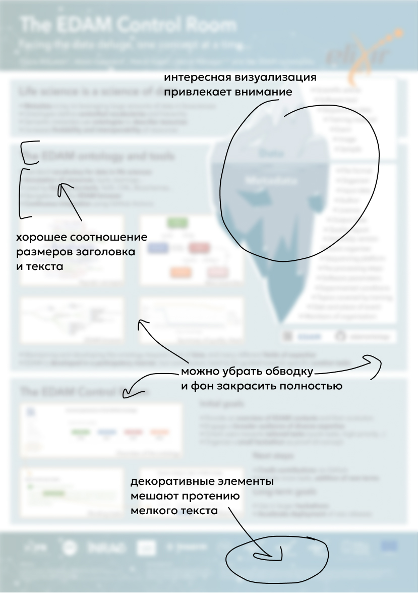

Здесь чётко видна работа с акцентами: заголовки, ключевые цифры и визуальные метки мгновенно привлекают внимание. Автор использует модульную сетку, которая помогает выстроить ясную логику повествования. Обилие воздуха вокруг блоков облегчает восприятие сложных данных и снижает визуальную нагрузку.